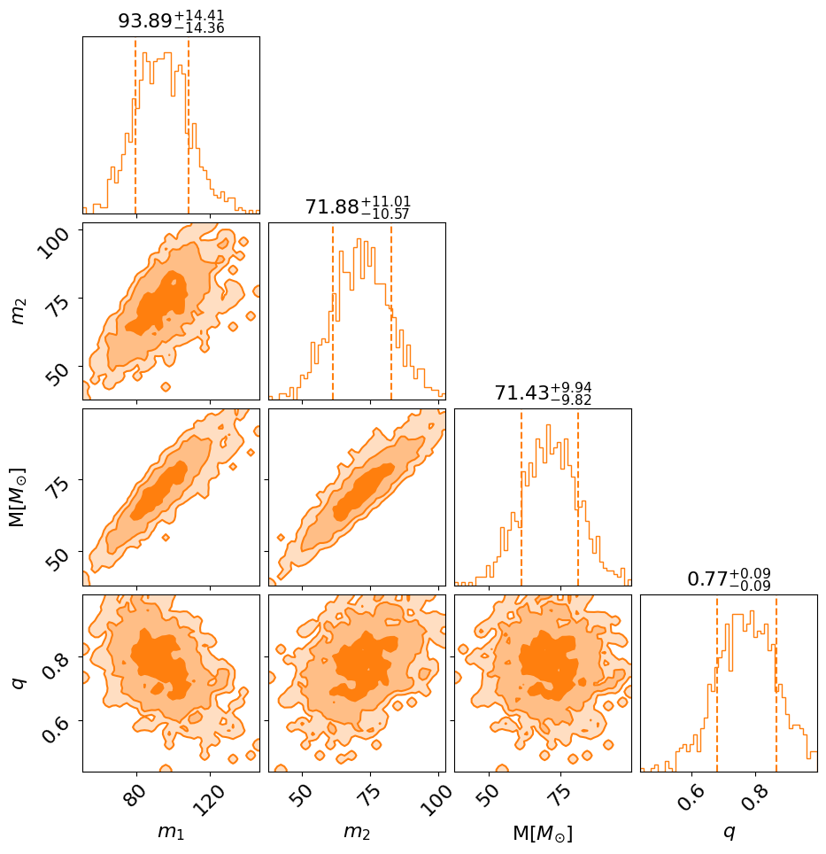
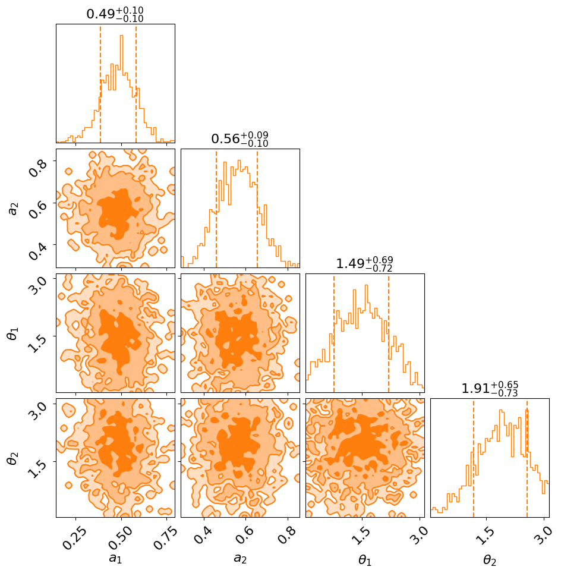
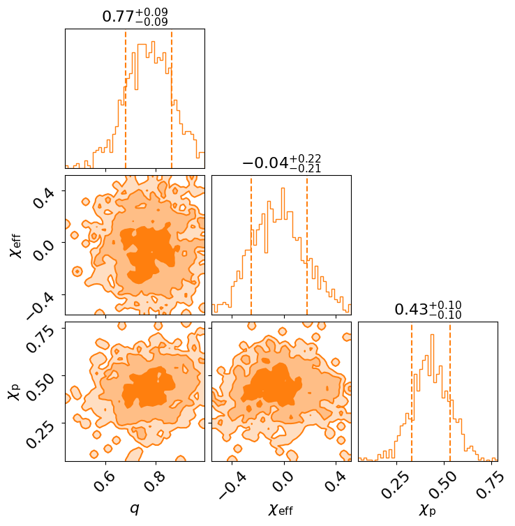
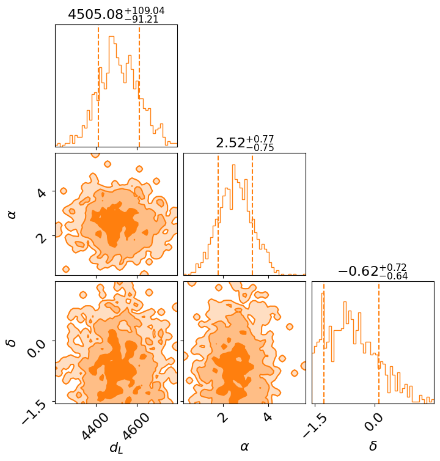

GW203566
Contents
%load_ext autoreload
%autoreload 2
%matplotlib inline
import pandas as pd
pd.set_option("display.max_rows", None, "display.max_columns", None)
! python -m pip install --upgrade pip -q
! pip install "nrsur_catalog @ git+https://github.com/cjhaster/NRSurrogateCatalog@main#egg" -q
GW203566#
Below are some plots for GW203566 from the NRSurrogate Catalog.
from nrsur_catalog import NRsurResult
nrsur_result = NRsurResult.load("GW203566")
# you can specify a `cache_dir`: folder where data will be downloaded (defaults to "~/.nrsur_catalog_cache")
nrsur_result.posterior_summary()
| Posterior 90% CI | Prior | |
|---|---|---|
| Parameter | ||
| mass_1 | ${93.89}_{-14.36}^{+14.41}$ | Constraint(minimum=5, maximum=100, name='mass_... |
| mass_2 | ${71.88}_{-10.57}^{+11.01}$ | Constraint(minimum=5, maximum=100, name='mass_... |
| chirp_mass | ${71.43}_{-9.82}^{+9.94}$ | bilby.gw.prior.UniformInComponentsChirpMass(mi... |
| mass_ratio | ${0.77}_{-0.09}^{+0.09}$ | bilby.gw.prior.UniformInComponentsMassRatio(mi... |
| a_1 | ${0.49}_{-0.10}^{+0.10}$ | Uniform(minimum=0, maximum=0.99, name='a_1', l... |
| a_2 | ${0.56}_{-0.10}^{+0.09}$ | Uniform(minimum=0, maximum=0.99, name='a_2', l... |
| tilt_1 | ${1.49}_{-0.72}^{+0.69}$ | Sine(minimum=0, maximum=3.141592653589793, nam... |
| tilt_2 | ${1.91}_{-0.73}^{+0.65}$ | Sine(minimum=0, maximum=3.141592653589793, nam... |
| chi_eff | ${-0.04}_{-0.21}^{+0.22}$ | NA |
| chi_p | ${0.43}_{-0.10}^{+0.10}$ | NA |
| ra | ${2.52}_{-0.75}^{+0.77}$ | Uniform(minimum=0, maximum=6.283185307179586, ... |
| dec | ${-0.62}_{-0.64}^{+0.72}$ | Cosine(minimum=-1.5707963267948966, maximum=1.... |
| luminosity_distance | ${4505.08}_{-91.21}^{+109.04}$ | bilby.gw.prior.UniformSourceFrame(minimum=100.... |
| phase | ${1.97}_{-0.81}^{+0.79}$ | Uniform(minimum=0, maximum=6.283185307179586, ... |
| psi | ${1.68}_{-0.73}^{+0.77}$ | Uniform(minimum=0, maximum=3.141592653589793, ... |
| phi_jl | ${3.60}_{-0.76}^{+0.80}$ | Uniform(minimum=0, maximum=6.283185307179586, ... |
| phi_12 | ${2.89}_{-0.82}^{+0.76}$ | Uniform(minimum=0, maximum=6.283185307179586, ... |
| phi_jl | ${3.60}_{-0.76}^{+0.80}$ | Uniform(minimum=0, maximum=6.283185307179586, ... |
| theta_jn | ${0.99}_{-0.64}^{+0.71}$ | Sine(minimum=0, maximum=3.141592653589793, nam... |
Corner Plots#
Mass#
fig = nrsur_result.plot_corner(["mass_1", "mass_2", "chirp_mass", "mass_ratio"])
findfont: Font family ["'sans-serif'"] not found. Falling back to DejaVu Sans.
findfont: Font family ['cursive'] not found. Falling back to DejaVu Sans.
findfont: Generic family 'cursive' not found because none of the following families were found: 'Liberation Sans'
findfont: Font family ['sans'] not found. Falling back to DejaVu Sans.
findfont: Generic family 'sans' not found because none of the following families were found: 'Liberation Sans'
findfont: Font family ['sans'] not found. Falling back to DejaVu Sans.
findfont: Generic family 'sans' not found because none of the following families were found: 'Liberation Sans'
findfont: Font family ['sans'] not found. Falling back to DejaVu Sans.
findfont: Generic family 'sans' not found because none of the following families were found: 'Liberation Sans'

Spin#
fig = nrsur_result.plot_corner(["a_1", "a_2", "tilt_1", "tilt_2"])

fig = nrsur_result.plot_corner(["mass_ratio", "chi_eff", "chi_p"])

Sky-localisation#
fig = nrsur_result.plot_corner(["luminosity_distance", "ra", "dec"])

Waveform posterior-predictive plot#
fig = nrsur_result.plot_signal(outdir=".")
XLAL Error - NRSur7dq4_Init_LALDATA (LALSimIMRPrecessingNRSur.c:184): Unable to resolve data file NRSur7dq4.h5 in $LAL_DATA_PATH
XLAL Error - NRSur7dq4_Init_LALDATA (LALSimIMRPrecessingNRSur.c:184): I/O error
XLAL Error - PrecessingNRSur_core (LALSimIMRPrecessingNRSur.c:1836): Error loading surrogate data.
XLAL Error - PrecessingNRSur_core (LALSimIMRPrecessingNRSur.c:1836): Generic failure
XLAL Error - XLALSimInspiralChooseTDWaveform (LALSimInspiral.c:1232): Internal function call failed: Generic failure
XLAL Error - XLALSimInspiralTDFromTD (LALSimInspiral.c:2533): Internal function call failed: Generic failure
XLAL Error - XLALSimInspiralTD (LALSimInspiral.c:2780): Internal function call failed: Generic failure
XLAL Error - XLALSimInspiralFD (LALSimInspiral.c:3021): Internal function call failed: Generic failure
|NURSUR CATALOG|03/03 16:25:17|WARNING| Unable to create a waveform: do you have NrSur7dq4 installed? Defaulting to IMRPhenomPv2
Analysis configs#
Below are the configs used for the analysis of this job.
nrsur_result.print_configs()
|NURSUR CATALOG|03/03 16:25:29|INFO| To be implemented...
Download the analysis datafiles with the following (you can specify an outdir)
nrsur_result.download_analysis_datafiles()
|NURSUR CATALOG|03/03 16:25:29|INFO| Saving files to outdir_GW203566
|NURSUR CATALOG|03/03 16:25:29|INFO| To be implemented...
|NURSUR CATALOG|03/03 16:25:29|INFO| Downloading analysis strain
|NURSUR CATALOG|03/03 16:25:29|INFO| Downloading PSDs
|NURSUR CATALOG|03/03 16:25:29|INFO| Downloading calibration files
|NURSUR CATALOG|03/03 16:25:29|INFO| writing analysis config file
|NURSUR CATALOG|03/03 16:25:29|INFO| Files: